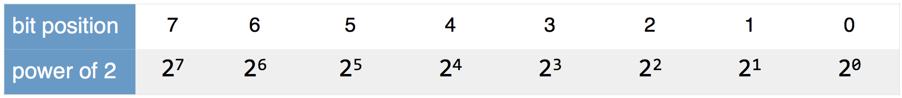
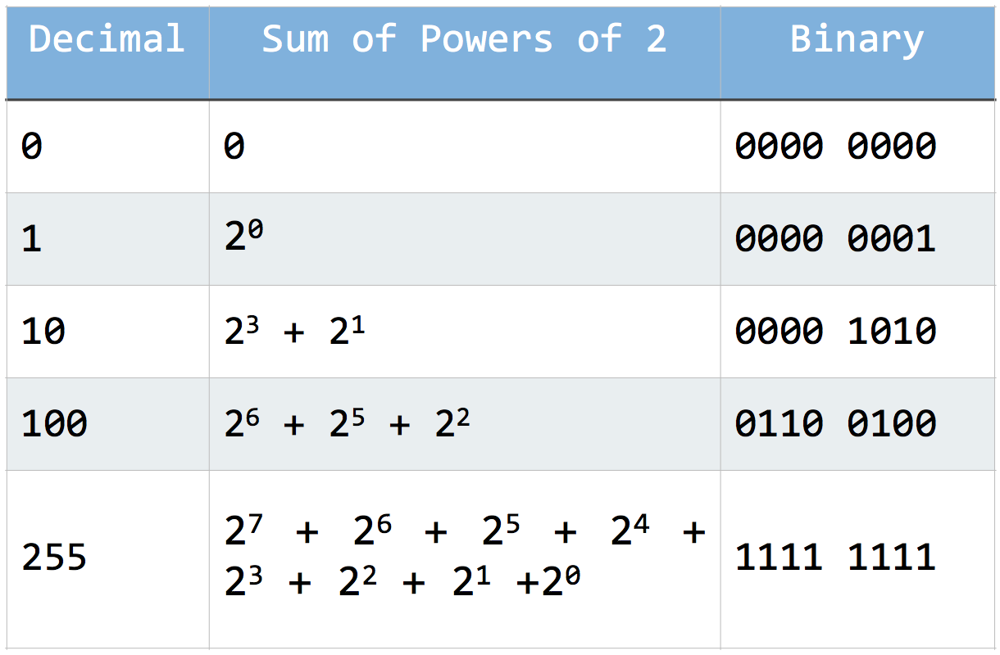
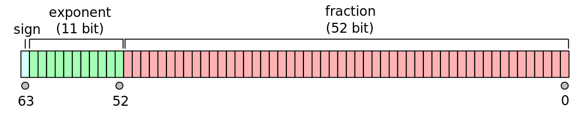
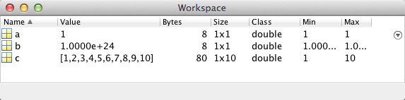
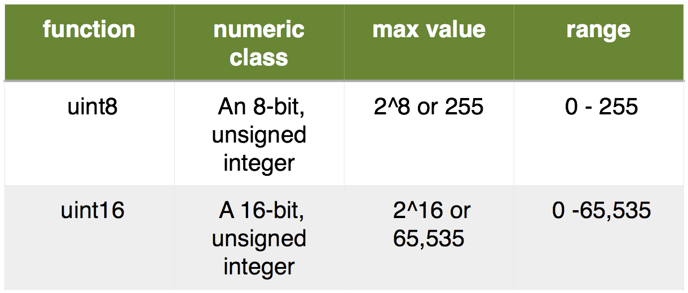
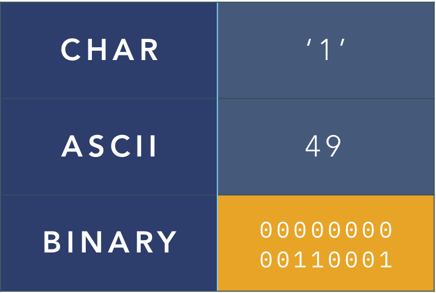
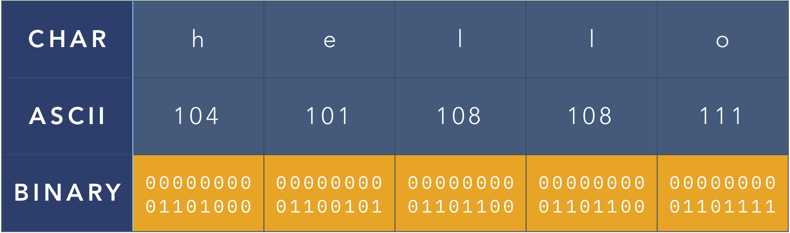
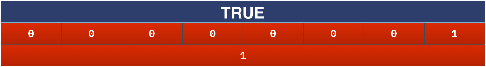

Binary Numbers and Computer Memory
a world of ones and zeros
Overview
We've learned that variables have different classes. And that you need different syntaxes to create different classes. This seems unreasonably complicated. You are using a computer after all. Why can't the computer figure out whether you want to enter the number 1 or the character '1'? Well, to understand the reason behind the madness, it is useful to peer under the hood and learn how computers store information using just ones and zeros.
So, in this module, we will learn how variables are stored in Computer Memory, what binary numbers are, and what does this all have to do with data types.
After this module, you should be able to
-
Count in binary and how to convert binary numbers to decimal (and vice versa)
-
Describe how computers store information (hint: it's in binary)
-
Discuss the advantages and disadvantages of using these following MATLAB numeric classes: double, single, uint8, uint16.
-
Define the term integer saturation and explain why care must be taken when performing integer math
-
Define ASCII code
-
Explain the concept of typecasting and be able to typecast from one variable class to another
You should probably know these MATLAB Functions
-
dec2bin - Convert decimal to binary number in character array
-
bin2dec - Convert binary number to decimal number
-
double - convert to double precision
-
single - convert to single precision
-
uint8 - convert the array into unsigned 8-bit (1-byte) integers
-
uint16 - convert the array into unsigned 16-bit (2-byte) integers
-
logical - convert the array to a logical class
-
char - convert the array to a character class
-
num2str - Convert numeric arrays to character arrays
And these terms
- base 10 numeral system - aka decimal
- base 2 numeral system - aka binary
- bit - an elemental unit of information in computing
- byte - 8 bits. The smallest addressable memory element in most computers.
- ASCII - a character encoding standard
- Variable Class - a class identifies the properties of the variable such as the number of bytes required to store that variable and the possible range of values.
- Dynamic Range - the ratio between the largest and smallest values possible
- Bit depth - the number of bits reserved for each element of a variable
- Type casting - the process of converting the contents of a variable from one class to another class
- Dynamic Range
Binary Numbers
In the beginning, there was darkness. Then there was light. This can be described as a change in a binary state: First no light. Then Light. First off, then on.
Binary numbers describe such changes in binary state using just two values: all or nothing. Or, more simply, one or zero. This is known as the base-2 numeral system. In base-2, numeric values are represented using 2 different symbols (typically 0 and 1). By comparison, in a base-10 system—the one we all learned in kindergarten—there are 10 symbols (that we call digits): 0, 1, 2,...9.
In a binary system (like a computer), you use only two digits, 0 and 1, to represent all numeric values (and, by extension, letters, words and all other information). For example, 01101001 is binary for the numeric value of 105.
Binary numbers are often clustered in groups of 8 digits (see next section). From right to left, each position in this cluster has an equivalent bit-number, starting from 0, that indicates increasing powers of 2:

The bit on the farthest right corresponds to \(2^0\), while the bit on the farthest left (in this example) corresponds to \(2^7\). To create any numeric value, you need to create an equation that contains these powers of 2. Consider the following:
In this equation we have a 2 to the power of 1 and a 2 to the power of 0, which correspond to the first two bit positions. In binary, this would be written as 11. Although, often binary is written in chunks of eight digits, so: 0000 0011.
The following table shows the binary representation of a series of decimal numbers, in 8-digit chunks:

Challenge 0
Write the power of 2 equation for the numeric value 4 and display the value 4 in binary.
Power of 2 Equation
Display 4 in binary
`0000 0100'
…binary is often prefaced with zeros
What does the MATLAB function dec2bin do?
Computer Memory
Most computer memory, at their core, store their information as a state of energy: either on or off. So, for all intents and purposes, ALL information in a computer is stored as a sequence of ones and zeros, or binary.
-
A bit is an elemental unit of information in computing (typically treated as a 1/0 or true/false). It is a single 0 or 1 that can represent basic information such as on/off, plus/minus, or as component in the base-2 numeral system.
-
A byte contains 8 bits and is the smallest addressable memory element in most computers. This means that a computer cannot store anything smaller than a byte (even if all you need to store is just 1 bit of information).
This is the reason why you will often see binary numbers preceded by a series of zeros. For example, when indicating the value one in a byte, you precede the one with 7 zeros as such:
0000 0001
It takes one byte of computer memory just to save the number one.
Bit Depth
One byte is the smallest addressable memory element, but you can allocate more than one byte to a memory element.
Bit depth is a term to indicate how many bits of memory are allocated to a memory element. For example:
-
8-bit: contains 1 byte per element
-
16-bit: contains 2 bytes per element
Confusingly, some acquisition devices, such as some cameras on microscopes, can acquire information that is not easily divisible into bytes. For example, there are cameras that acquire 12-bit images. In this case, those images are stored in computer memory as 16-bit, even though there are only 12-bits of information.
As we will see later in the course, this disconnect between the way the memory is acquired and the way the memory is stored can cause display issues, which are easily corrected if you understand bit depth.
Variable Class and Memory
As we have previously discussed, variables represent storage locations in the computer's memory. When dealing with very large numbers or very large arrays, it is critical to understand how MATLAB allocates memory when assigning values to a variable.
Numeric Class
Numeric class variables store numbers. There are many different numeric classes which can be broadly broken down into floating vs integer classes. Floating classes can have significant digits (i.e. numbers after the decimal point), whereas the integer classes solely handle whole numbers.
MATLAB Numeric Classes include signed and unsigned integers, and single- and double precision floating-point numbers. Each class has a different consequence on memory. You can find a list of the numeric types available in MATLAB here. We will focus on a subset of these classes, including the following:
Double Precision
The default MATLAB numeric class is double. Double-precision variables, use 64 bits (8 bytes) of memory per element in an array. Due to this amount of memory allocation, they can accurately represent very large numbers. This is also known as having a very large dynamic range, or a large ratio between the largest and smallest values possible.
The following is an illustration of how a double precision number is stored in memory:

As you can see, there are 64 different positions. In each position, you can store a 1 or a zero. The first position is the sign position. The rest of the positions handle storing the value of the number.
Double variables can represent numerical values with approximately 15-17 significant decimal digits. However, due to the amount of memory allocated per element in an array, double-precision variables can consume a lot of more memory.
In MATLAB, you can see how much memory a double precision variable consumes with the following examples:

Notice that the variables
aandb, which respectively have the values of one and one septillion, use only 8 bytes of memory, while the variablec, which is an array of 10 numbers, takes 80 bytes to store in memory.
Single Precision
The single data type requires 32 bits per element to store in memory — half as much as a double — and is ideal for storing and processing real number values when you don’t require the same level of accuracy as that provided by double precision.
The default numeric class for MATLAB is double. To convert from the double class to another class you must use a type-casting function, such as single.
For example:
| Typecast to Single | |
|---|---|
var_single contains the output from the conversion of the variable c into a single class.
Note that var_single requires only half of the Bytes (40) that c requires, even though it contains the exact same values (1:10). (1)
- The function whos displays the properties of the inputted variable name (similar to the workspace)
Integers
Integer Class. Integer class variables can store only whole numbers in each element. Integer classes typically require far less memory per element than floating class. However, they can only handle a small range of values, such as 0-255.
Digital Images are often stored in an unsigned integer class. The most common ones that we will be using for digital images are uint8 and uint16.

There are other integer classes (int8, int16){target="_blank"}, which are signed (i.e. can have negative values), but we will not use these classes in this tutorial.
Memory Considerations
The main reason to use an integer class is to save memory.
For example, let's convert c into an unsigned 8-bit integer:
| Typecast to unsigned 8-bit | |
|---|---|
var8 is now an integer class
Compared to the double c, or the single var_single, the uint8 var8 requires only 10 bytes of memory. This is because uint8 arrays require only 1 byte of memory per element.
Integer Saturation
Integers have much lower possible maximum values than their floating-point counterparts (lower dynamic ranges). Watch what happens when you type cast a very large number (1e24) to an 8-bit unsigned integer:
| Typecase to integer | |
|---|---|
Notice that when I converted 1 septillion to an 8-bit unsigned integer, the value was clipped to 255 and the variable (f) was allocated 1 byte of memory.
Remember, for an 8-bit unsigned integer, the maximum value you can have is 255. In computer memory, an 8-bit integer has only 8 positions to store each bit. So, in binary, 255 would be represented as follows:
Challenge 1
How much memory is allocated for a 16-bit unsigned number?
2 bytes (16 bits)
Math With Integer Classes
Although useful for conserving memory, care must be taken when performing math with integer classes.
For example, consider the following:
Notice that every value, except for 255, increases by 10. This is called integer saturation or 'clamping' the value to the class maximum (255).
For a more detail discussion of Integer and Single-Precision Math, please refer to this article.
Challenge 2
What do you think will happen if you add a 200 more to b? i.e b + 200?
The last three elements will be saturated (clamped to 255)
What do you think will happen if you subtract 10 from a? i.e. a-10?
The first two elements of the array will be clamped to the class minimum (0)
Character Class
The character class handles characters (letters, numbers, spaces, etc.). So, how are characters stored in computer memory using binary?
The answer is ASCII. ASCII stands for the "American Standard Code for Information Interchange". That's right. America. ASCII is a "character encoding scheme" (basically a look-up table) where each character of text has a numeric equivalent. So, any text that you see on a computer screen (or on your phone) has a numeric equivalent, even the commas, periods and emojis. And even the characters for numeric digits, like '1'.
For example, the character '1' is stored in memory as follows:

What about the character array 'hello'?
Same deal, but as a vector:

In each case, it is the numeric ASCII code that is stored in memory, instead of the actual character.
Type casting - character class
This encoding scheme for character arrays can have important implications. Consider the following:
So,
'1' + 1 = 50???
What's going on here?
To understand this result, simply review the ASCII code. Remember, the character '1' is actually stored in memory as the numeric value of 49. When you use the syntax to perform a mathematical operation on a character array, MATLAB automatically type casts the character array, so that it can do the math, as follows:
Similarly, if you add 2 to the variable ch (which contains the character array 'hello'), then you get the following result
MATLAB type casts the entire character array to its ASCII numeric equivalent (see above) and then adds 2.
Even adding two characters returns a similar result:
Can you guess the ASCII codes for 'A' and 'B' from this result?
Well, if you divide 131 by 2 you get 65.5. Considering that ASCII codes are whole numbers, and 'A' and 'B' have sequential ASCII codes, then it follows that 'A' must be 65 and 'B' 66.
Getting the ASCII code of a character
If we want the ASCII, we can simply type cast characters to their numeric ASCII equivalents by using one of the numeric type class functions (i.e double, single, uint8, etc.).
For example, the function uint16 will return the ASCII code equivalent for any character in a character array:
The result is a series of numbers that indicate the ASCII numeric code for each letter of the alphabet.
Challenge 3
Can you spot the ASCII code for 'space' in the vector above?
Count over by letters: The third and eighth letters are spaces (ASCII code 32).
Why is uint16 the best choice for type casting character arrays (and not, say, uint8)?
ASCII characters only require one byte (uint8), but MATLAB uses uint16 for character arrays to support Unicode/UTF-16 encoding, which allows for a much larger set of characters beyond standard ASCII.
You can also type cast an integer array into a character array using the function char
Getting a character from an ASCII code
If you want the character equivalent of a given ASCII code, simply typecast an integer to a character class using the **char** function.
| Typecast Number to character | |
|---|---|
Similarly, an array of numbers...
| Typecast a series of numbers to characters | |
|---|---|
…returns a string of characters. By the way, that large space before the exclamation point is not empty. These are the non-printing characters such as Line return or Escape that do not show up in screen displays.
Upper Case vs Lower Case
As you may have guessed, there are different ASCII codes for lower-case letters vs upper case letters. This is the reason why some file systems like UNIX (or MATLAB variable names) are case-sensitive.
Let's use the function upper to convert b to all caps and then typecast the variables into the integer class uint16.
…Here we create two character arrays containing the letters 'a' through 'f' and 'A' through 'F'.
If we typecast the variables b and c to an integer class:
…We get the following differing values:
ans =
1×6 uint16 row vector
97 98 99 100 101 102 % b ASCII values
ans =
1×6 uint16 row vector
65 66 67 68 69 70 % c ASCII
Notice that we get a different series of numeric ASCII code for the lower vs upper case characters.
Remember, behind the scenes, everything is numbers.
Functions that type cast
There are a whole series of functions that simplify converting values from one class to another. The naming convention of these functions typically employ the number 2 in the middle of the function name.
For example, to properly convert a number to its character array equivalent, you can use the function num2str, as follows:
| Convert 1 to the character '1' | |
|---|---|
Conversely, to convert a character array of numbers back their numeric equivalent you can use the str2num function:
| Convert the Character 1 to the value 1 | |
|---|---|
There are other functions that perform similar actions, such as str2double that you can review at your leisure.
Logical Class
Logical arrays have the fewest possible values for each element. They can contain either a 0 or a 1 (interpreted as TRUE or FALSE).
So, they require only 1 byte of memory per element, but really only 1 bit (out of those 8) is being used to represent the value.
Something like this:

Type casting to logical class
MATLAB typecasts variables to the logical class by converting all non-zero elements to TRUE and all zero elements to FALSE.
You can use the function logical to typecast to the logical class. For example, the following syntax converts a numeric array to a logical array:
The resultant logical array, l, has the same dimensions as k, but has only 1's and 0's (or TRUE and FALSE, respectively).
Note that only the zero from k was converted to a FALSE. The rest of the numbers were converted to TRUE. You can do something similar with a character array:
| Type cast character array to logical | |
|---|---|
However, you will typically just get all TRUE since all printable characters are represented by an ASCII code that is greater than zero.
Note
By the way, the ASCII code 0 codes for the NULL character. A character that basically means "don't do anything, don't print, don't display, nothing". This is not a character you can type using your keyboard and you will not likely ever purposefully use the NULL character. However, we can force its use for this example, using the following syntax:
This Module is OVER.
Flight of the Conchords - The Humans are Dead